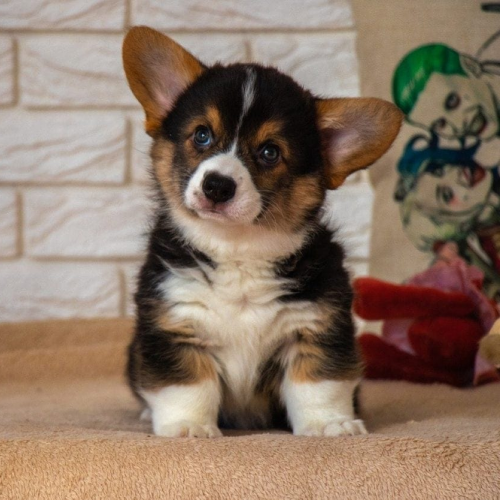
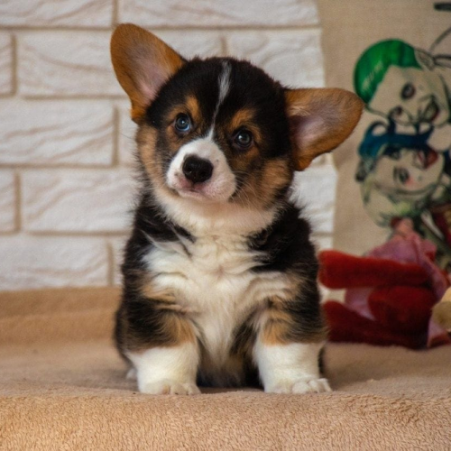

L'Origine des Corgis
L'origine des Corgis remonte aux collines verdoyantes du Pays de Galles, où ils ont une histoire profondément enracinée. Deux races distinctes de Corgis, le Pembroke Welsh Corgi et le Cardigan Welsh Corgi, ont évolué au fil des siècles pour devenir les races que nous connaissons aujourd'hui. Les Corgis étaient autrefois les fidèles compagnons de bergers gallois, utilisés pour garder et conduire le bétail. Le nom "Corgi" dérive du gallois, où "cor" signifie "nain" et "gi" signifie "chien", faisant référence à leur petite taille. Ces chiens sont réputés pour leur agilité, leur intelligence et leur éthique de travail acharné. Au fil du temps, leur popularité s'est étendue au-delà du Pays de Galles pour devenir des chiens de compagnie bien-aimés dans le monde entier, tout en conservant leur charme rustique et leur riche héritage historique.
 

L'Intelligence Étonnante des Corgis
Les Corgis sont bien connus pour leur intelligence étonnante. Ils sont des apprenants rapides et sont souvent considérés comme l'une des races de chiens les plus intelligentes. Cette intelligence fait d'eux d'excellents candidats pour l'entraînement et la résolution de problèmes. Les Corgis sont capables de comprendre rapidement de nouvelles commandes et de s'adapter à diverses situations. Leur agilité mentale et leur désir d'apprendre en font des compagnons de choix pour les propriétaires qui apprécient un chien qui peut répondre de manière proactive à différentes situations.
Le Caractère Enjoué des Corgis
Une des caractéristiques les plus charmantes des Corgis est leur nature enjouée. Ils débordent d'énergie positive et sont toujours prêts à s'amuser. Cette attitude joyeuse les rend idéaux pour les familles actives et les personnes qui aiment passer du temps à jouer et à interagir avec leur chien. Les Corgis sont également connus pour leur humour naturel, avec leurs façons de courir et de sauter caractéristiques qui vous feront sourire et rire à coup sûr. Leur caractère enjoué en fait des compagnons affectueux et divertissants.
La Santé Robuste des Corgis
Les Corgis sont réputés pour leur santé robuste. Ils ont tendance à vivre longtemps, souvent jusqu'à 12 à 15 ans, voire plus. Cette longévité est en partie due à leur résistance physique et à leur nature active. Bien sûr, une alimentation équilibrée et des soins vétérinaires appropriés sont essentiels pour maintenir leur santé, mais en général, les Corgis sont des chiens robustes qui peuvent faire face à diverses conditions climatiques et environnementales. Leur petite taille et leur structure solide en font des chiens adaptés à divers modes de vie, de la vie en appartement à celle à la campagne.